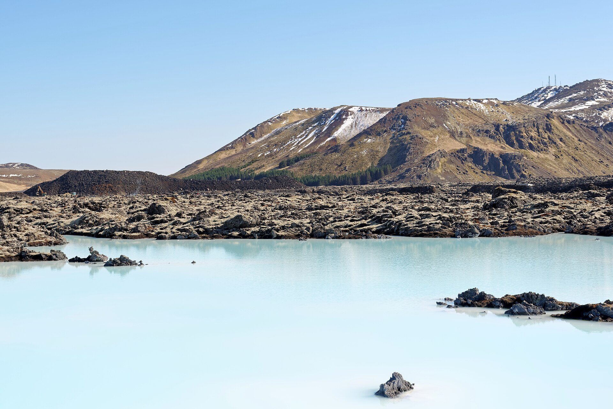
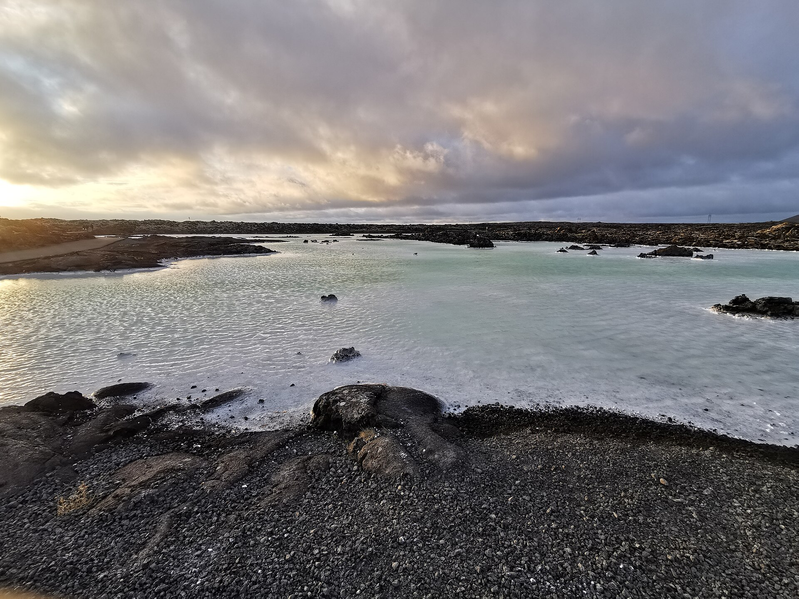
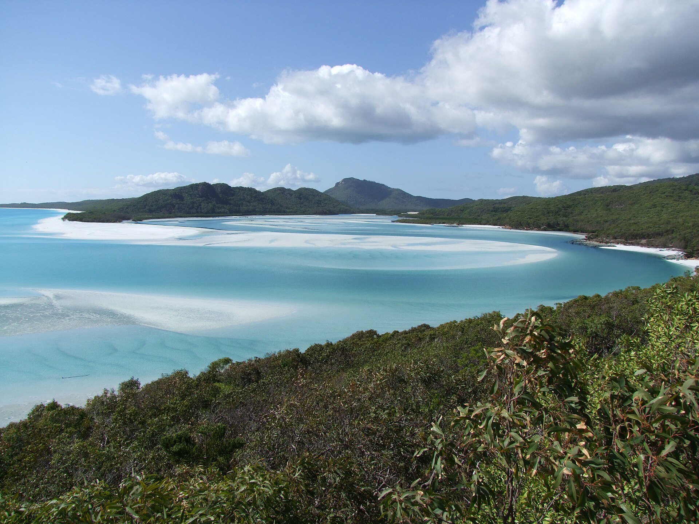
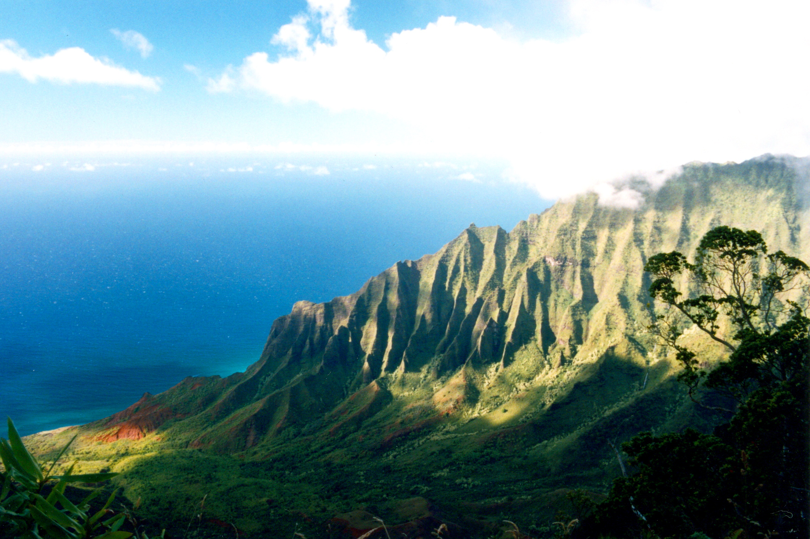
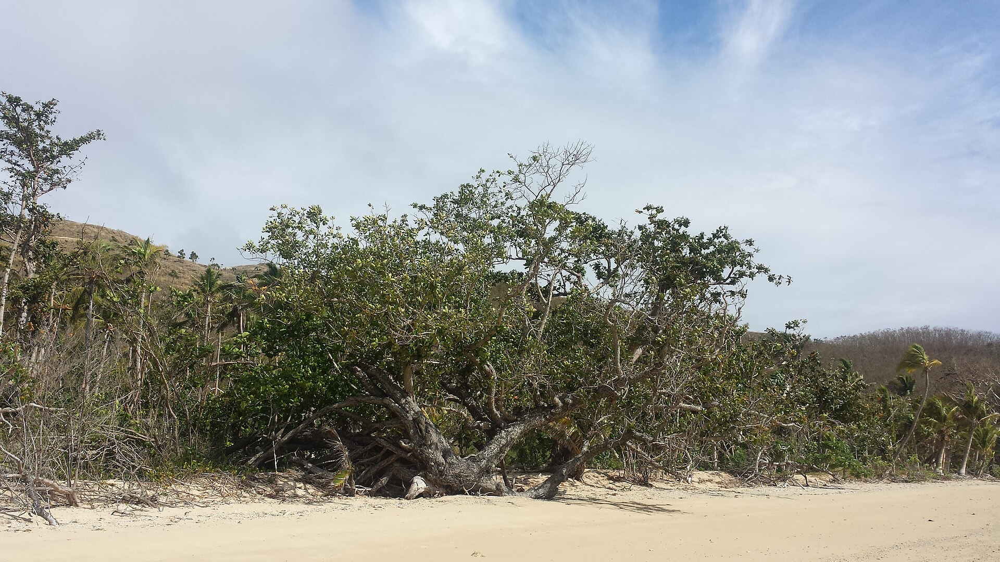
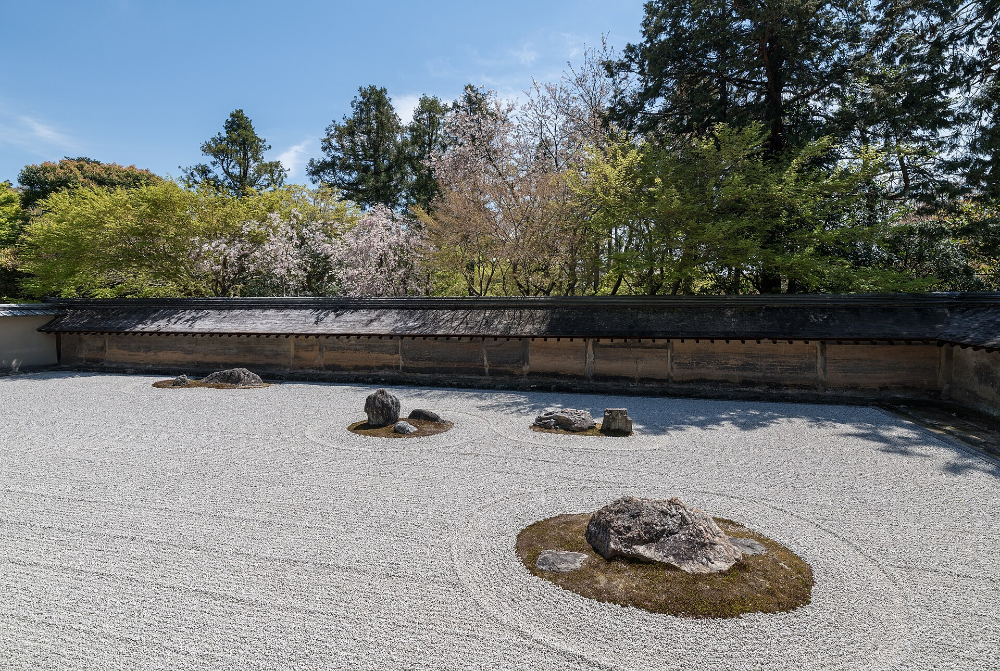

Some places are quieter than you.
Five of them, chosen for one reason: they slow you down the moment you arrive.
Water that has been still for a thousand years.
The Blue Lagoon sits in a lava field where the ground itself is warm. You sink in, the steam closes around you, and the noise you carried here stops at the shoreline.
Go in the last hours of daylight. The water holds the heat of the day and the sky turns the colour of the page you are reading.


The tide draws, then redraws.
Twice a day, Hill Inlet's white silica sand swirls into new patterns. No two visits are the same photograph.

Reachable only by boat, on foot, or by giving up.
The Nāpali Coast has no road along it. The ridges you are looking at have stayed this quiet because they are genuinely hard to get to, and the people who make the effort go quiet too.

Naviti Island, Fiji. One tree, one beach, and nobody else on it.
Fifteen monks have failed to count these rocks.
Ryōan-ji's garden has kept its five rock groups and raked gravel for five hundred years. Legend says only enlightenment lets you see all fifteen stones from the veranda.
Whatever you see, the point is that you sat still long enough to look.

Find your calm.
The quietest places on earth are waiting. Say one true sentence about your week.
Every quiet place, on one map.
Drag it. Zoom it. These are real coordinates, not a mood board.
Pick the silence that fits your week, then book the flight before you talk yourself out of it.